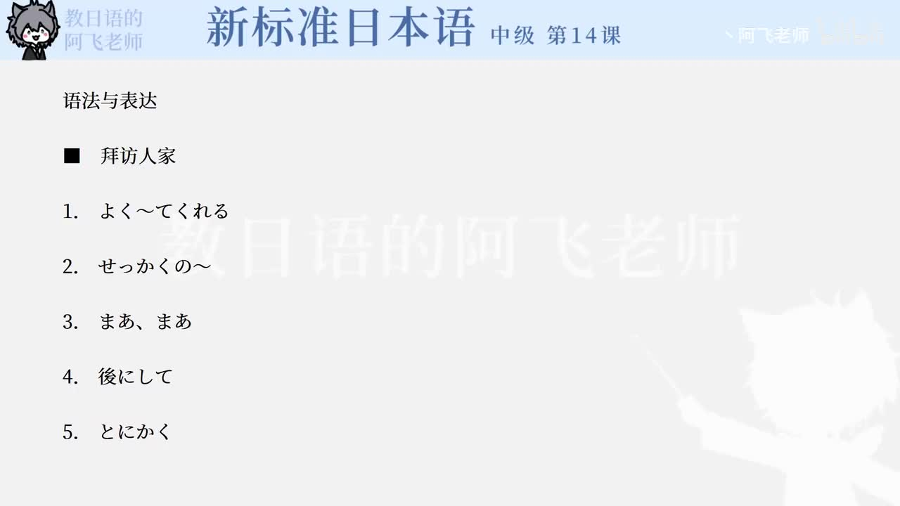

Bilibili P165 · Dialogue
恩師：拜访老师时的寒暄、送礼与告辞
围绕王风拜访大学时代恩师后藤教授，整理进门寒暄、送礼自谦、收礼客气、工作近况、朋友联系和告辞问候。
全篇听力精讲
按 17 句会话轮播。每句包含原文、平假名、中文、重点语法和结构拆解。
会话流程地图
进门寒暄お久しぶりです / よく来てくれたね
送礼自谦つまらないものですが / 気持ちだけ
近况交流やりがい / 学んだような気がします
告辞问候そろそろ失礼します / よろしく
逐句精读
语法速记
よく〜てくれる欢迎/感谢
表示对方特意为自己做了某事，含感谢心情。例：王さん、よく来てくれたね。
せっかくの〜难得的
强调机会、时间或事物难得。例：せっかくのお休みの日に。
〜は後にして先放一边
表示把某话题/动作暂时往后放。例：そんなあいさつは後にして。
つまらないものですが送礼自谦
递礼物时常用，表示“一点小意思”。
〜なくてよかったのに本来不必
表示对方其实没必要做某事，常含客气。
せっかくだから既然难得
承接对方好意，表示既然如此就接受/利用。
〜ような気がする感觉好像
表达不绝对的主观感受。例：学んだような気がします。
〜かい / 〜だい亲近问法
长辈或亲近男性常用，不能随便对上级使用。
〜そうです传闻
接普通形，表示“听说……”。例：勤めているそうです。
〜によろしく代问好
省略表达，完整意思是“请向……转达问候”。
核心词汇与搭配
练习与复习
来源说明：视频标题、时长、CID 和首帧来自 Bilibili 公开视频接口；课文依据本地新标日中级第14课「恩師」会话整理。